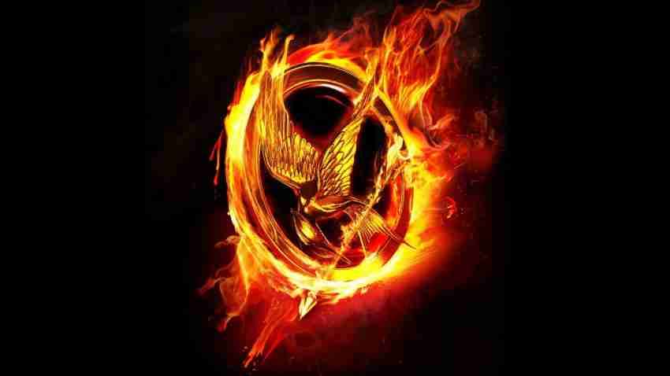
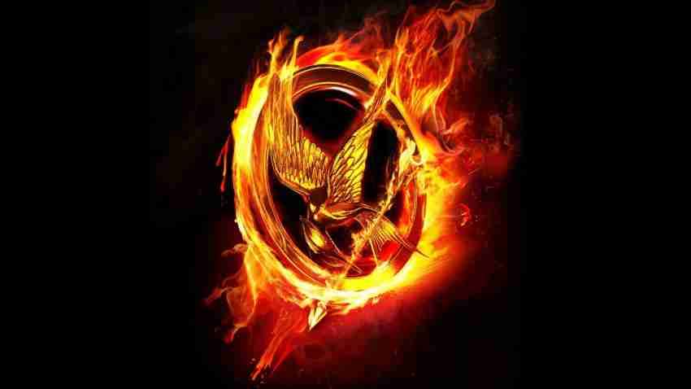

Baseado na obra de mesmo nome escrita por Suzanne Collins, A história é estabelecida em um período distópico pós-apocalíptico na nação de Panem, onde meninos e meninas de 12 a 18 anos devem participar dos Jogos Vorazes, um evento anual televisionado no qual os "tributos" precisam lutar até a morte até que sobre apenas um, que é coroado vencedor.
Os Jogos Vorazes são apresentados para o público como um combate violento, cruel e muitas vezes injustos.
Os competidores podem formar alianças para derrotar mais facilmente seus inimigos.
Katniss Everdeen voluntaria-se para tomar o lugar de sua irmã mais nova nos jogos.
Ao lado de seu parceiro masculino do seu distrito, Peeta Mellark, Katniss viaja à Capital para treinar para o evento com a ajuda de Haymitch Abernathy, que já venceu os jogos uma vez.